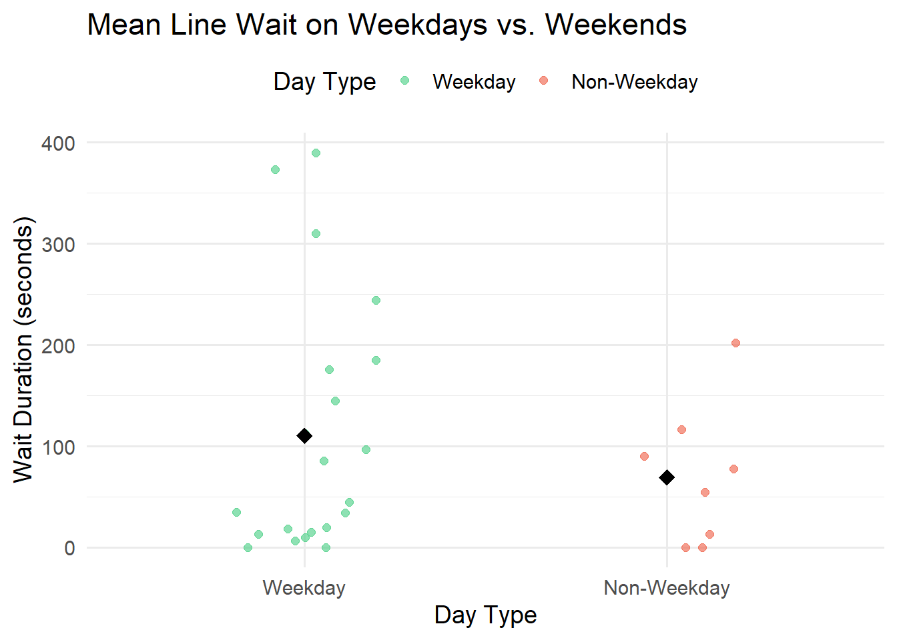
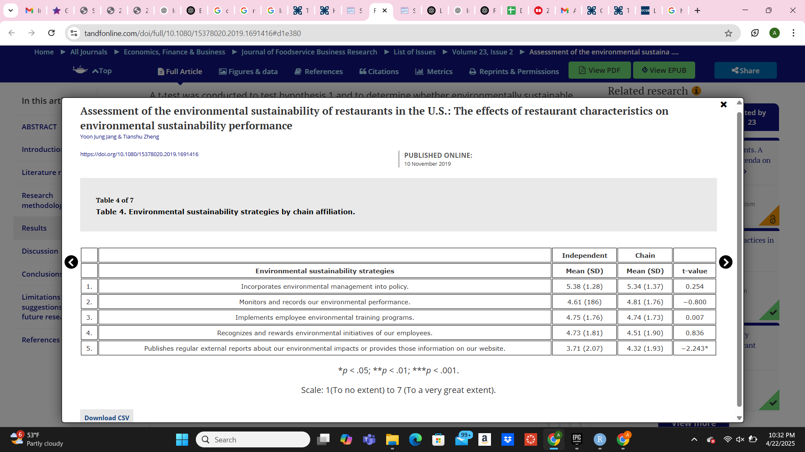

── Attaching core tidyverse packages ──────────────────────── tidyverse 2.0.0 ──
✔ dplyr 1.1.4 ✔ readr 2.1.5
✔ forcats 1.0.0 ✔ stringr 1.5.1
✔ ggplot2 3.5.1 ✔ tibble 3.2.1
✔ lubridate 1.9.4 ✔ tidyr 1.3.1
✔ purrr 1.0.4
── Conflicts ────────────────────────────────────────── tidyverse_conflicts() ──
✖ dplyr::filter() masks stats::filter()
✖ dplyr::lag() masks stats::lag()
ℹ Use the conflicted package (<http://conflicted.r-lib.org/>) to force all conflicts to become errors
library(here)
here() starts at C:/Users/alyss/OneDrive/Desktop/ENVS-193DS/ENVS193 Homework03/193Homework03
library(gt) library(janitor)
Attaching package: 'janitor'
The following objects are masked from 'package:stats':
chisq.test, fisher.test
library(readxl)
Problem 1:
I could calculate the mean wait time in seconds for weekdays and non-weekdays to compare whether wait times tend to be longer during the week. This is informative because weekdays tend to have more routine activity such as school or work, which might lead to longer lines compared to weekends.
# Load and clean the datadata <-read_csv(here("data", "envs 193DS data - Sheet1.csv")) %>%clean_names()
Rows: 29 Columns: 6
── Column specification ────────────────────────────────────────────────────────
Delimiter: ","
chr (1): Week Day (Y/n)
dbl (3): Duration (s), Temp (F), Amount of people in line
date (1): Date
time (1): Start Time
ℹ Use `spec()` to retrieve the full column specification for this data.
ℹ Specify the column types or set `show_col_types = FALSE` to quiet this message.
# Convert 'week_day_y_n' to a factor with readable labelsdata <- data %>%mutate(day_type =if_else(week_day_y_n =="Y", "Weekday", "Non-Weekday"),day_type =factor(day_type, levels =c("Weekday", "Non-Weekday")) )# Summarize mean duration by day typesummary_data <- data %>%group_by(day_type) %>%summarize(mean_duration =mean(duration_s, na.rm =TRUE), .groups ="drop")# Display calculated mean of Weekdays and Non-Weekdayssummary_data
# Plot with individual points and group means, using non-default colorsggplot(data, aes(x = day_type, y = duration_s, color = day_type)) +geom_jitter(width =0.2, alpha =0.6, size =2) +geom_point(data = summary_data, aes(y = mean_duration), color ="black", size =4, shape =18) +scale_color_manual(values =c("seagreen3", "tomato2")) +labs(title ="Mean Line Wait on Weekdays vs. Weekends",x ="Day Type",y ="Wait Duration (seconds)",color ="Day Type" ) +theme_minimal(base_size =14) +theme(legend.position ="top")

Figure 1: Each point represents an individual observation of wait duration (in seconds), with black diamonds indicating the mean wait time for each group. The data shows that weekdays tend to variable and generally longer wait durations compared to non-weekdays. Based on summary statistics, mean wait time on weekdays was calculated at 110.0 seconds, while on non-weekdays it was 69.4 seconds.
# Creating summary tablesummary_data <- data %>%group_by(day_type) %>%summarize(`Mean Wait Duration (seconds)`=round(mean(duration_s, na.rm =TRUE), 1),.groups ="drop" )# Display table using gtsummary_data %>%gt() %>%tab_header(title ="Mean Line Wait Time on Weekdays vs. Weekends" ) %>%cols_label(day_type ="Day Type" ) %>%fmt_number(columns =c(`Mean Wait Duration (seconds)`),decimals =1 )
Mean Line Wait Time on Weekdays vs. Weekends
Day Type
Mean Wait Duration (seconds)
Weekday
110.2
Non-Weekday
69.4
Problem 2: a. For my personal data, an affective visualization would evoke a “stress” response for longer wait times observed at the coffee shop, representing its impact on daily experience. For example, utilizing a gradient between red and green could demonstrate lengthier wait times throughout my data points. Diary-style annotations may help the viewer to understand and convey the emotions behind the numbers.
Problem 3: a. In “Assessment of the environmental sustainability of restaurants in the U.S.: The effects of restaurant characteristics on environmental sustainability performance”, both a t-test and ANOVA were used in order to address the main research question.

Table used
This table demonstrates the results of t-tests clearly by showing group means, standard deviations, and t-values across independent and chain restaurants. However, the visual design does not show which differences are statistically significant, and there is no representation of ANOVA results. Improving the format with alternating colors and explicitly labeling which test was used for each comparison would enhance the appearance and understanding of the table.
c Authors handled visual clutter by using a clean grid-style layout. However, they only used minimal bolding, and did not include it in the numbered column, which were not part of the results. This made results harder to interpret.
In improving this table, I would first bold the number column in order to provide visual clarity and separate these numbers from the statistical results. Adding alternate row shading would also aid in the differentiation between column categories and data, as the bold font is light. Colors can also be used to further represent sustainability strategies, with darker shading being used to show greater extents of implementation in addition to numbering them 1-5. With 5 being darkest and 1 being lightest, it is much easier for the viewer to understand what this table is communicating about environmental sustainability strategies as they interpret the statistical results.